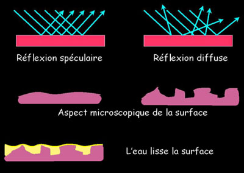
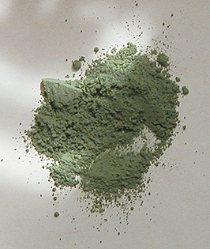

|
|
Navig.
page/section


_____
|
|
Pages soeurs
I, A propos des liants
II, Bulles, siccativ., struct. élec.
III, Caséine, phosphore, dissociation
IV, Les orbitales
V, L'aérogel
VI, Polarisation de la lumière
VII, Sfumato et diffusion Rayleigh
VIII, Les interférentielles
IX, Dextrine, farine et chiralité
X, L'ocre bleue
XI, Les métamatériaux
XII, Le jaunissement
XIII, Laser etc.
XIV, L'holographie
XV, L'holographie numérique
XVI, Extérieur, intérieur, chaux
XVII, L'électrolyse et les ions
XVIII, L'électricité, un peu plus loin
XIX, Oxydation, métaux
XX, Les échelles
XXI, Nature et évolution des résines
XXII, Le mouillage pigmentaire
XXIII, La molette
XXIV, Blanche neige
XXV, Lumière et matière
XXVI, Magnétisme
XXVII, Ambre et vieilles branches
XXVIII, L'origami miroir
XXIX, Le feu
XXX, Peau du métal
XXXI, La ville en un souffle
XXXII, Oxyder des matériaux
XXXIII, Ocre bleue, une solution
_____
|
Copyright © www.dotapea.com
Tous droits réservés.
Précisions cliquer ici
|
|
| |
|
|
Les dialogues sur la physique-chimie
appliquée aux arts
Chapitre
XIX
Oxydations, métaux
Questionnements et applications
|
 |
dial dial
dial
|
Ce chapitre des Dialogues de Dotapea est une discussion entre Jean-Louis,
physico-chimiste au CNRS, et un candide, Emmanuel..
Oxydation, métaux, transmission de l'électricité, galvanisation, et même
"l'éclat ou le terne", le poli et le mat, la pile, l'encre d'or, les
pointes métalliques, voici quelques uns des sujets de cet article qui s'inscrit
dans un triptyque (voir les chapitres XVII
et chap. XVIII).
En vous souhaitant bonne lecture de ce dialogue fortement "transversal" et
plutôt rebondissant.
|
|
Emmanuel :
Qu'est-ce qui se passe quand un métal s'oxyde?
Jean-Louis :
Commençons par rappeler ce qu'est un métal pour un chimiste. Un
métal est un élément qui perd facilement ses électrons pour former un
ion positif (cation), et qui forme des liaisons
dites "métalliques" avec des atomes de métal du même genre, par exemple
Fe-Fe, ou d'un autre genre, par exemple Fe-Cu (alliages).
Emmanuel :
Je ne savais pas que les liaisons d'un alliage étaient si
intimes. Est-ce le cas de tous les alliages ?
Jean-Louis :
Tous les métaux et alliages, oui.
|
|
|
|
Emmanuel :
Autre chose concernant les définitions : qu'est-ce qui distingue la circulation électronique
métallique de celle des plasmas dont on a parlé récemment
[lien] ? Les électrons
semblent là aussi circuler assez librement.
Jean-Louis :
Les métaux sont des solides. Les ions métalliques sont fixes,
c'est la structure même, les électrons seuls se déplacent. Un plasma est
un gaz, les ions et les électrons sont mobiles. Les vitesses de
déplacement sont aussi sans commune mesure, mm/sec pour les électrons
d'un métal, km/sec pour les ions chauds.
|
|
Distinguer les métaux des plasmas |
|
La plupart des métaux sont
chimiquement réactifs, en particulier vis à vis de l'oxygène de l'air
avec lequel ils forment des oxydes. Les temps de réaction varient
toutefois énormément : le sodium s'enflamme
spontanément dans l'air, le fer pur rouille sur
des années. Les métaux les plus réactifs sont les
alcalins (sodium,
potassium,...). Les métaux dits "de
transition" (fer, cuivre, nickel, zinc...) s'oxydent plus lentement. Il
existe des métaux qui ne s'oxydent pas dans des conditions ordinaires,
les métaux "nobles" (or,
palladium, platine).
[Au sujet des métaux nobles, lire
passage in
Courrier des Lecteurs]
Emmanuel :
Si je regarde la table de Mendeleïev de Dotapea (lien)
pour situer ces différents métaux, ceux qui s'oxydent le moins semblent
situés parmi ceux qui ont l'électronégativité
la plus forte. C'est ça ?
|
|
Un
paysage des métaux |
|
Jean-Louis :
L'électronégativité est la tendance pour un corps à attirer les
électrons, donc à se comporter en oxydant. Les métaux ont tendance à
donner des électrons, à se comporter en réducteurs. Une définition
empirique des métaux et des non métaux est que les oxydes des métaux
sont basiques, ceux des non-métaux acides. [voir
définitions dans l'article L'oxygène]
|
|
[Lire absolument l'article
Synthèse
(Concepts physico-chimiques)] |
|
Pour
certains métaux la couche d'oxyde est imperméable, et protège donc le
coeur du matériau de l'oxydation. Ces métaux restent brillants et
conducteurs de l'électricité (chrome, nickel,...) pendant des années.
|
|
Une
oxydation protectrice |
|
Emmanuel :
Ne s'agit-il pas des métaux qui précisément servent à réaliser
des électrolyses ? Dans le chromage, le nickelage ou le cuivrage, les
couches de métaux semblent très fines et pourtant très « robustes ».
Jean-Louis :
Oui, c'est l'idée de base. Protéger et améliorer l'aspect avec
une fine couche inaltérable. La version métallique de la peinture
anti-rouille.
Emmanuel :
La protection imperméable que constitue la couche oxydée doit
avoir une épaisseur vraiment infime, non ?
Jean-Louis :
Quelques couches atomiques, oui.
|
|
[sur
l'électrolyse,lire le Chap. XVII] |
|
Emmanuel :
Ces questions ont apparemment préoccupé beaucoup de gens depuis des siècles.
En art contemporain également. On peut citer l'exemple célèbre de Claude Lalanne
qui s'est beaucoup attachée à ces procédés.
J'ai
depuis appris que les Égyptiens aussi semblaient pratiquer la
galvanoplastie.
Qu'est-ce
qu'ils faisaient ?
|
|
Sur ces
thèmes on citera deux références liées aux légendaires piles de Bagdad :
*
une en anglais
*
une en français
|
|
Jean-Louis :
On a découvert des vases et des statuettes dorées, la technique
employée étant très probablement
électrolytique. On a aussi trouvé des pièces en bois et en céramique
qui étaient cuivrées. J'ai entendu parler d'une statue en cuivre
représentant un homme et qui ne pesait que 6kg. La théorie est que l'on
a cuivré une statue de bois par électrolyse, le bois a depuis disparu.
Je ne
peux cependant pas juger du sérieux scientifique de ces informations.
Emmanuel :
D'accord. Des perspectives mais pas de certitudes
alors que pour Bagdad ça a l'air plus sûr.
|
|
Bois
et céramiques galvanisés très précocement |
|
Dans
l'ensemble, cela fait un peu penser à l'expérience scolaire classique
des pommes de terre qui permettent d'allumer une toute petite ampoule.
De petits moyens mais une certaine efficacité.
Et puis
même si les voltages en jeu dans la galvanisation restent assez faibles
(quel que soit le procédé), est-ce que c'est comparable à
l'expérience des patates ?
Jean-Louis :
L'expérience des patates, ou mieux des pommes Granny Smith
fonctionne réellement. On peut produire du courant en plantant des
lamelles métalliques de nature différente (ex. cuivre et zinc, fer et
aluminium,.) dans une solution saline ou dans un fruit acide.
Emmanuel :
Est-ce que tu peux dire quelques mots sur la nécessité d'utiliser
des lamelles faites de métaux différents ?
Jean-Louis :
Pour qu'il y ait une différence de potentiel, il faut forcément
qu'il y ait une dissymétrie quelque part. Deux éléments différents ou
deux molécules n'ont pas les mêmes structures électroniques, quand on
les met en contact on crée une différence de potentiel.
C'est
essentiellement le nombre total d'électrons qui compte. On appelle ça
"le niveau de Fermi".
Emmanuel :
Ca rejoint ce schéma du
chapitre IV où tu représentes les électrons par paires dans des sortes
de cases ?
Jean-Louis :
Oui, c'est lié. Chaque électron est lié à son noyau par une
certaine énergie dite "de liaison". Si on fait la somme des énergies de
liaison pour tous les électrons, on a la quantité d'énergie qu'il a
fallu pour construire l'atome (lire
passage in chap. IV). Et chaque atome (pour des éléments
différents) est différent.
Emmanuel :
Est-ce que l'énergie de liaison diffère si peu en fonction de la
couche ?
Jean-Louis :
Elle diffère plutôt beaucoup, toutes proportions gardées.
|
|
Comme avec les patates de notre enfance ? |
|
Emmanuel :
D'accord. En rappel d'un
passage du chapitre III
lié à la force ou la faiblesse des acides et des bases, dans le cas où
l'on parle de solution saline, le sel en solution doit-il comporter un
acide fort et une base faible ? Jusqu'à quel point un sel doit-il avoir
une tendance acide pour pouvoir rivaliser avec un acide libre ? Je veux
dire au fond « comment est-ce que ces point-là jouent sur la circulation
des petits électrons ? »
Jean-Louis :
Du moment qu'il y a des ions, quelle que soit leur origine, on a
une conduction électrique. Une solution de chlorure de sodium (résultat
de l'action d'un acide fort sur une base forte) sera conductrice au même
titre qu'une solution d'acétate
d'ammonium (acide et base faibles).
Après ça cela dépend d'autres paramètres comme la solubilité et la
mobilité des ions.
|
|
Force, faiblesse, comment cela joue-t-il ? |
|
Emmanuel :
Un oxyde métallique simple peut-il être considéré comme un sel ?
Au fond, ce n'est jamais qu'un métal associé à un
non-métal, non ?
Jean-Louis :
Un sel est toujours ionique. Un oxyde est généralement neutre.
Insoluble et isolant la plupart du temps.
Emmanuel :
Curieux. Pourquoi un sel ne peut-il être neutre ?
Jean-Louis :
Le sel est neutre, puisque les charges + et - sont en nombre
égal. Mais il est formé d'espèces chargées, il est ionique.
Emmanuel :
D'accord. |
|
Distinction oxyde/sel : l'aspect ionique |
|
Et la
circulation électronique est-elle, elle aussi, fondamentalement
différente dans le cas des oxydes et celui des sels ?
Jean-Louis :
Ca se complique encore. Quand il y a des ions, c'est une
conduction ionique. Dans les métaux c'est généralement électronique.
Dans les oxydes et les semi-conducteurs, c'est soit des électrons, soit
des "trous", définis comme une "absence d'électron", c'est à dire une
charge positive... Ca dépend du matériau.
Galvanisation/métallisation : une technique
particulière
|
|
Conduction électronique vs conduction ionique |
|
Pour
revenir à la galvanisation, il est
possible de recouvrir certains métaux simplement en les plongeant dans
une solution contenant les sels d'un autre métal. Si tu trempes un
morceau de fer dans du sulfate de cuivre, le fer se couvre d'une
pellicule de cuivre. On dit qu'un métal "déplace" les sels d'un autre
métal plus électronégatif.
Pour ce
que j'en sais cette couche métallique est très faible et peu adhérente.
Mais j'ai entendu parler de nickelage et de chromage "sans électrolyse".
Je ne sais pas comment ça fonctionne.
Retour sur l'oxydation
L'oxyde de
fer est poreux, il ne protège pas le métal, comme chacun sait.
Bien
qu'ayant des propriétés communes, tous les métaux ne s'oxydent pas de la
même façon. Pour le chimiste, il n'y a pas d'oxydation, d'ailleurs, mais
une oxydation et une réduction simultanée, on dit
oxydoréduction.
Le fer
métal Fe est un réducteur, il perd deux électrons quand il s'oxyde,
l'oxygène O est un oxydant, il gagne deux électrons quand il se réduit.
|
|
Quand l'électronégativité fait
le travail toute seule |
|
Emmanuel :
Pas si simples, ces termes, pour les profanes. Déjà réduire et
oxyder sont à prendre dans le sens réflexif, pas dans le sens transitif,
ce n'est pas une évidence.
* le réducteur ne réduit que son propre
nombre d'électrons. Il n'est pas réducteur d'un autre atome. On dirait
qu'il est simplement « le donateur ».
* l'oxygène n'est pas le seul « oxydant »
ce qui ajoute encore un petit peu de confusion. Les
oxydants « augmenteurs »
n'augmentent que leur propre cheptel d'électrons. Ce sont simplement
« les récipiendaires ».
Non ?
Jean-Louis :
Oui !
Emmanuel :
Est-ce que l'on peut dire que ces deux tendances ont un rapport
direct avec le sujet des couches électroniques que l'on a déjà abordé
plusieurs fois [lien] ?
Jean-Louis :
Encore oui ! Toutes les réactions chimiques sont des histoires
d'électrons qui se promènent.
|
|
Des
sens à bien saisir [voir
Synthèse] |
|
L'oxyde
formé est FeO, un des oxydes de fer. Car il peut y avoir plusieurs
oxydes, par exemple FeO et Fe2O3, selon le nombre
d'électrons perdus par l'atome de fer. Deux dans le premier cas, trois
dans le deuxième. On parle de degré d'oxydation 2 ou 3, on a alors du
Fe++ ou du Fe+++. Certains métaux ont beaucoup de degrés d'oxydation
possibles, d'autres moins. Le chrome(III) est biologiquement
indispensable, le chrome(VI) est fortement toxique. On voit que le degré
d'oxydation change les propriétés de l'ion.
La couleur
de l'oxyde est elle aussi fonction de son degré d'oxydation, les
peintres le savent depuis longtemps : la
calcination des "terres" (i.e.
oxydation supplémentaire par action de l'air et de la température) aux
temps préhistoriques permettait déjà d'élargir la palette chromatique de
nos ancêtres.

Emmanuel :
En éliminant H2O des ocres jaunes tels que celui-ci on va radicalement
vers le rouge [lien].
On a parlé récemment du jaunissement
des polymères, mais sur un cas de rougissement comme celui-là,
quelle peut être la raison à ton avis ?
Jean-Louis :
C'est encore et toujours la structure électronique.
|
|
Degrés d'oxydation, couleurs |
|
Emmanuel :
Autre chose. Un métal non oxydé a généralement un « aspect métallique ». En
fait il existe des non-métaux qui ont cet aspect aussi mais peu importe
pour ce que je veux dire.
Lorsqu'une oxydation se produit, l'aspect miroitant a tendance à
s'estomper. Alors, comme aurait pu dire la méchante reine (celle qui avait un
problème de miroir), pourquoi l'eau qui n'a rien a priori d'un métal -
ou aussi bien une laque de Coromandel
solidifiée -, arrive-t-elle à réfléchir une image si fidèlement ?
|
|
Qu'est-ce que l'éclat ? |
|
Jean-Louis :
On va de plus en plus loin. Les métaux sont caractérisés par leur
"éclat métallique". C'est en effet à cause de leurs propriétés de
conduction électroniques qu'ils sont brillants :
les champs électriques
(i.e. la lumière, qui est une onde électromagnétique) n'y pénètrent pas.
Les
oxydes sont le plus souvent isolants (au mieux semi-conducteurs), les
métaux oxydés sont donc plus ternes.
La
réflexion de la lumière est aussi fonction de l'état de la surface. Les
surfaces polies fonctionnent mieux que les surfaces mates. L'eau, le
verre, les laques ne sont pas de bons conducteurs mais la qualité du
poli de leur surface les rend capable de réfléchir plus de lumière que
le commun des matériaux.
|
|
--> Sur le sujet, lire
passage
plus développé in chap. 28 |
|
Emmanuel :
Très intéressant. Je pense au
Chapitre XVI, Clothilde
Bernair
et son galet à tadelakt.
Donc le
poli - défini par le Robert par deux mots : « lisse et brillant »,
contraires : mat, rugueux - correspondrait à une capacité de ne pas
laisser entrer la lumière ?
Jean-Louis :
Le poli c'est d'abord un état de surface, le fait de pouvoir
avoir une réflexion spéculaire et non diffuse de la lumière.
Emmanuel :
Mais comment par une simple action mécanique, chiffonner une
encaustique, « serrer » un tadelakt, etc,
arrive-t-on à modifier des facteurs aussi microscopiques ? Et comment
l'eau y parvient-elle sans intervention extérieure ?
Jean-Louis :
Le polissage est un art, on parvient à polir le verre et à
obtenir que sa surface n'ait pas d'aspérité (creux ou bosse) plus grande
que quelques 10-10 mètres alors que les grains de l'agent
polissant font au minimum 10-7 mètres.

Un autre rôle de l'eau
|
|
Le
poli et le mat |
|
L'eau
présente dans l'atmosphère joue très souvent un rôle dans les phénomènes
d'oxydation. On peut ainsi former des hydroxydes, par exemple Fe(OH)2
qui est vert, FeO(OH) qui est rougeâtre, Fe(OH)3 qui est brun.
Emmanuel :
Tiens je
ne connaissais pas la variété verte. Elle est stable ?
Jean-Louis :
Je crois.
Il faudrait que je vérifie mais n'est-ce pas la "terre verte"?
Emmanuel :
La terre
verte, cette inconnue.
Perego
insiste sur la présence de
glauconite
(lien externe) ou
« d'autres phylosilicates, comme la
céladonite
[lien externe] par
exemple » (p.725). Il précise que certaines terres vertes sont « de la
céladonite presque pure » (notamment vers Vérone).
Le vrai
céladon
lui-même est effectivement à base de fer mais c'est une glaçure. En plus
je n'ai pas assez d'informations pour conclure à la présence ou
l'absence de manganèse dans le mélange.
Concernant la terre verte et ses « tribus de silicates », va savoir, à
la variété près, ce qui donne la coloration, y compris dans la
céladonite : le fer ou le manganèse ? D'autant plus qu'un oxyde de fer
jaune+un bleu manganèse donnent une espèce de vert assez proche. Ça
devient difficile de s'y retrouver.
Enfin
c'est une piste, justement, que tu donnes : si le fer peut produire un
oxyde vert ça peut expliquer d'emblée la tendance vert-bleu du céladon et vert-un-petit-peu-bleu de la terre verte.

Jean-Louis :
Je me
souviens aussi que le sulfate de fer est verdâtre.
|
|
Terre verte |
|
Le rôle de
l'eau est multiple et complexe. Par exemple, le gaz carbonique de l'air
se dissout dans l'eau d'une surface humide et forme de l'acide
carbonique qui contribue à l'oxydation.
|
|
A ce
sujet voir aussi passage in
L'anhydride |
|
Emmanuel :
Tiens
justement ! Comment un acide - qui transporte son proton H+ -,
contribue-t-il à l'oxydation ?
Jean-Louis :
Le processus de formation de la rouille comprend trois étapes :
* formation d'hydroxyde de fer [Fe(OH)2] par action sur le fer des ions
hydroxydes (OH-) formés par réaction de l'oxygène de l'air avec l'eau.
* oxydation de ces ions fer(II) en hydroxyde de fer(III) sous l'action de
l'oxygène de l'air.
* transformation spontanée de ce solide en oxyde de fer hydraté.
Quand le
fer entre en contact avec l'eau, un processus électrochimique lent
commence à la surface du métal. Le fer est oxydé :
Fe + 2OH- → Fe(OH)2 + 2 électrons
et
pendant que l'oxygène de l'air est réduit en ion hydroxyde.
Emmanuel :
« et
pendant » ou juste « pendant » ?
Jean-Louis :
En même temps. C'est une
oxydoréduction, l'un s'oxyde, l'autre se réduit.
2H2O + O2 + 4 électrons → 4OH-
Ensuite
l'hydroxyde de fer II est immédiatement oxydé d'un degré
supplémentaire :
4Fe(OH)2 + 2H2O + O2 → 4Fe(OH)3
Enfin,
cet hydroxyde de fer se transforme spontanément en oxyde de fer
hydraté :
2Fe(OH)3 → Fe2O3·3H2O
Le
"point" dans la formule ci-dessus signifie que l'eau est présente dans
la structure cristalline mais n'est pas liée chimiquement à l'oxyde.
On
comprend la nécessité de la présence d'eau liquide, qui intervient à
chaque étape de la réaction chimique (sans eau on forme de l'oxyde de
fer mais c'est pas de la rouille !). La corrosion tend à progresser plus
rapidement dans l'eau de mer que dans l'eau douce car l'eau de mer
(solution saline) est plus conductrice et favorise donc les déplacement
ioniques et les réactions d'oxydoréduction. La formation de la rouille
est également accélérée en présence d'acides pour la même raison.
L'acide nitrique concentré a au contraire un rôle de passivation, il
empêche temporairement la corrosion du fer.
Emmanuel :
Il y a de
si grosses différences dans l'action des acides sur les métaux ? A quoi
est-ce dû ?
Pour
illustrer ça concrètement, peux-tu donner des exemples de composés
acides susceptibles d'agir chromatiquement dans des délais raisonnables
sur :
* du fer
* du cuivre
* du bronze ?
|
|
Acide et rouille |
|
Jean-Louis :
On trouve
assez facilement des formules pour patiner les métaux avec différentes
couleurs (cf. antiquaires).
Par exemple pour le fer, on trempe très
rapidement la pièce dans un bain (acide sélénieux 10gr, sulfate de
cuivre 10gr, eau 1 litre) et on obtient jaune, pourpre, violet, bleu.
Pour
verdir le cuivre : 1 litre de
vinaigre (acide acétique dilué), 33gr
d'ammoniaque, 33gr sel de cuisine, 33gr chlorure
d'ammonium.
Verdir le
bronze : 100gr vinaigre, 12gr chlorure d'ammonium, 4gr
acide oxalique.
L'idée,
au bout du compte, est d'obtenir en surface un sel ou un oxyde de la
bonne couleur et qui soit adhérent (c'est la partie délicate.).
|
|
Patines métalliques |
|
Si on a
affaire à un alliage ou à un métal contenant des impuretés, on peut
former des "couples électrolytiques" (i.e. des piles électriques) qui
vont favoriser la corrosion (on dit alors que la surface "se pique").
Emmanuel :
Cette formation de couples électrolytiques, c'est à cause de quoi ?
|
|
La
pile : l'image des petits bidons |
|
|
|
L'encre d'or |
|
|
|
La
coloration anodique |
|
|
|
Définition de la galvanisation |
|
|
|
Désoxyder un métal en le cathodisant
Sur ce sujet lire un
passage du
courrier des lecteurs (application pratique) |
Jean-Louis :
Il y a des acides aminés
sulfurés, oui. Les composés soufrés sont toujours très "odorants". Pense
à la légendaire odeur des oeufs pourris.
Jean-Louis :
On forme un sulfure ou un
sulfate. Sulfure de fer, FeS ou pyrite. Sulfate de cuivre, sulfate de
fer, CuSO4, FeSO4.
Emmanuel :
Est-ce qu'il y a une raison
pour que quelquefois ça noircisse, d'autre fois ça donne des couleurs si
vives comme avec le cadmium par exemple ? J'imagine que c'est encore une
histoire de champs électroniques mais comment ça se passe pour donner
des résultats aussi différents au point de vue chromatique ?
Jean-Louis :
Oui, c'est vraiment à cause des niveaux électroniques. Selon leur
position, c'est coloré dans le visible ou pas.
Emmanuel :
D'accord.
Est-ce que ça confirme le
fait qu'un couple n'est pas la juxtaposition de deux personnalités
séparées ?
Jean-Louis :
???
Emmanuel :
C'est une blague idiote et en
même temps pas tant que ça. Ce qui se passe chromatiquement - entre
autres - dans un couple d'atomes, ça n'a aucun rapport avec une
juxtaposition. A tel point que l'on se demande si le concept d'atome
n'est pas un peu trop « individualisé ».
Jean-Louis :
Oui, les couples moléculaires
sont fusionnels. On partage tout ou presque.
|
|
Métaux et soufre Lire en complément
une réponse à un courrier des lecteurs qui développe un sujet très
proche. Lien. |
|
Emmanuel :
Le soufre semble donner des
résultats particuliers sur le papier. On s'en sert pour fabriquer des
calques par exemple. Dans le cas de la
carta tinta utilisée pour
« révéler » les traces des pointes métalliques, penses-tu que :
1) la colle d'os que l'on
emploie contient du soufre
Jean-Louis :
Je ne pense pas.
Emmanuel :
Mais alors d'où pouvait
provenir ce soufre ?
Jean-Louis :
De la pollution
atmosphérique ? En particulier aux temps historiques où l'on se chauffait
au charbon.
Je pense que les acides
(sulfurique notamment) utilisés pour la fabrication du papier peuvent
aussi constituer une bonne source de soufre....
Emmanuel :
C'est vrai que l'on se sert
de soufre pour certains papiers. Le
calque est le plus connu mais il en
existe d'autres. Le calque est relativement récent. On s'est plutôt
servi, longtemps, de parchemin puis de
papier huilé.
Le procédé de sulfuration est
plutôt simple (trempette dans un bain d'acide sulfurique) mais il a eu
du mal à émerger, vraisemblablement pour des raisons de coût de
fabrication (comparés aux anciens procédés, également très efficaces).
Il a fait quelques apparitions aux XIXème mais c'est à la fin de ce
siècle et surtout au suivant qu'il s'est répandu.
Donc j'ai envie de dire qu'il
a pu être inventé bien avant et employé pour un usage précis, limité,
tel que la carta tinta. Le dessin à la pointe est un procédé chic. Étant
donné le coût des pointes métalliques, on peut imaginer que
l'investissement d'un papier à la fabrication coûteuse se justifiait.
Cette piste paraît crédible a priori.
Autre indice :
François
Perego indique que « Un papier-calque très fin posé sur un fond d'or ou
autre métal poli, permet de très bien discerner les moindres taches,
usures et irrégularités ». Serait-ce pour des raisons chimiques ? Il ne
le précise pas.
Jean-Louis :
Aucune idée...
Emmanuel :
Donc pour commencer, je vais
faire quelques essais simples de contacts métalliques avec du calque et
nous verrons bien.
Jean-Louis :
Tu sors l'argenterie?
Emmanuel :
Je vais tenter avec du cuivre en poudre et de l'or en poudre.
Mais je n'ai pas d'argent sous la main. [quelques années plus tard,
l'expérience n'a pas donné un résultat probant]
2) que
l'osséine peut
jouer aussi un rôle en tant qu'oxydant ?
Jean-Louis :
Le charbon est plutôt
réducteur, mais de l'os calciné, si c'est à ça que tu penses, oui. Il sera capable d'absorber une
grande quantité d'oxygène et pourrait donc avoir des propriétés
oxydantes.
|
|
Papier, soufre et oxydants |
|
Emmanuel :
Une dernière chose continue à
me titiller.
L'oxygène et le soufre sont
voisins sur le tableau de Mendeleïev alors que
le chlore et le sodium par exemple ne le sont pas du tout. Ca semble correspondre à
des phénomènes assez différents.
Partant de là, à quoi ressemblerait une
table des éléments où l'on distinguerait les oxydants et les réducteurs
comme on peut le faire avec les métaux et les non-métaux ?
Jean-Louis :
Ben ça ressemblerait à la
table périodique ! Les éléments sont classés en fonction du nombre
d'électrons de leur couche externe, celle qui les rend réactifs. Selon
que la couche est presque pleine ou presque vide, ils sont oxydants ou
réducteurs.
|
|
Lire
la table de Mendeleïev dans la perspective oxydants/réducteurs |
|
Chapitre suivant |
Retour
début de page
|
|

 Communication
Communication
|
|